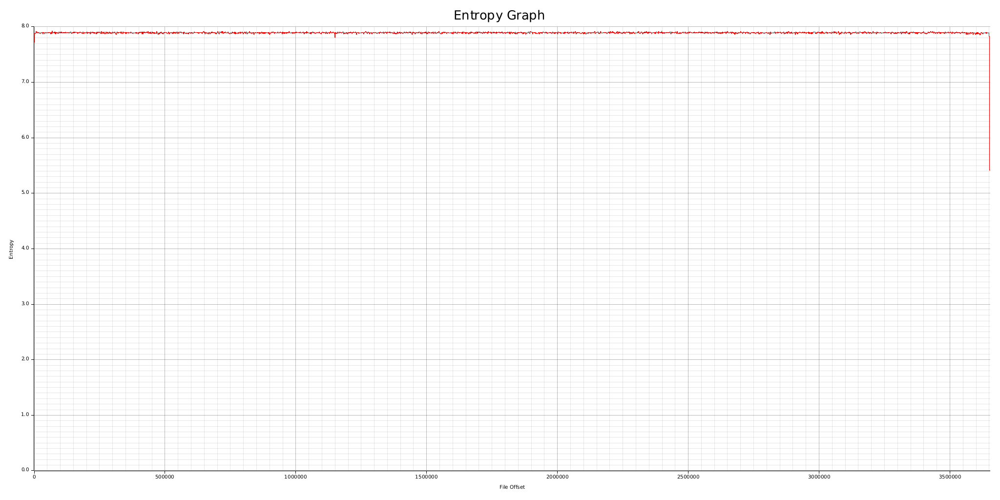
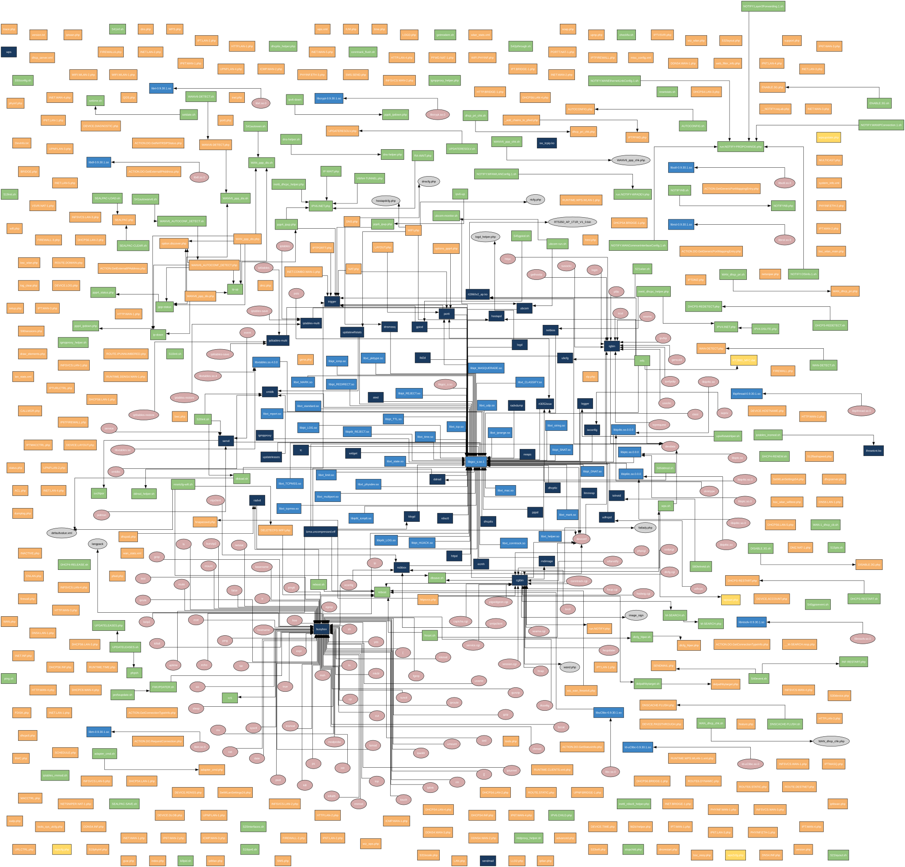

[+] Final aggregator
The main aggregator module compiles and summarizes results from various analysis modules into a comprehensive overview by processing and logging detailed information from each identified element.
[+] Tested firmware: /home/runner/work/emba/emba/DIR-600_fw_revb5_214b01_ALL_de_20130122.zip
[+] EMBA start command: ./emba -f ./DIR-600_fw_revb5_214b01_ALL_de_20130122.zip -l ./logs_emba -p ./scan-profiles/default-scan.emba -y -Q
[+] EMBA version: 2.0.3 / branch master / commit 95e1aace90d871f7410649f82616e9bc08df29d0
[+] Detected architecture and endianness (verified): MIPS / EL
[+] Operating system detected (verified): Linux / v2.6.33.2
[+] Operating system detected: D-Link dir-600 v2.14B01
[+] 1097 files and 94 directories detected.
[+] Entropy analysis of binary firmware is: 7.999944 bits per byte.

[+] Neato map with overlap prevention is available

[+] Found 509 issues in 114 shell scripts.
[+] Found 6 vulnerabilities via semgrep in 344 php files.
[+] Found 11 successful emulated processes (user mode emulation).
[+] System emulation was successful (booted / IP address detected (mode: bridge) / ICMP / NMAP / WEB / Exploited)
[+] Verified 136 kernel vulnerabilities (kernel symbols).
[+] Found the following configuration issues:
Found 3 kernel modules with 0 licensing issues.
Found 0 interesting files and 1 files that could be useful for post-exploitation.
[*] Identified the following binary details:
[+] Found 95 (100%) binaries without enabled stack canaries in 95 binaries.
[+] Found 91 (96%) binaries without enabled RELRO in 95 binaries.
[+] Found 95 (100%) binaries without enabled NX in 95 binaries.
[+] Found 45 (47%) binaries without enabled PIE in 95 binaries.
[+] Found 51 (54%) stripped binaries without symbols in 95 binaries.
[+] cwe-checker found a total of 4063 security issues in 37 tested binaries:
CWE119 - Buffer Overflow - 2 times.
CWE125 - Out-of-bounds Read - 6 times.
CWE134 - Externally Controlled Format String - 71 times.
CWE190 - Integer Overflow or Wraparound - 36 times.
CWE252 - Unchecked Return Value - 413 times.
CWE332 - Insufficient Entropy in PRNG - 1 times.
CWE337 - RNG seed function srand at 4223428 is seeded with predictable seed source. - 1 times.
CWE415 - Double Free - 65 times.
CWE416 - Use After Free - 135 times.
CWE467 - Use of sizeof on a Pointer Type - 55 times.
CWE476 - NULL Pointer Dereference - 1317 times.
CWE676 - Use of Potentially Dangerous Function - 1655 times.
CWE782 - Exposed IOCTL with Insufficient Access Control - 75 times.
CWE787 - Out-of-bounds Write - 225 times.
CWE789 - Large memory allocation - 6 times.
[+] Found 13590 possible vulnerabilities (via semgrep in Ghidra decompiled code) in 43 tested binaries.
[+] Found 562 usages of strcpy in 95 binaries.
[+] STRCPY - top 10 results:
COUNT| BINARY NAME | common linux file: y/n | CWE CNT / SEMGREP | RELRO | CANARY CN | NX state | SYMBOLS | NETWORKING |
37 | igmpproxy | common linux file: no | Vulns: 190 / 219 | No RELRO | No Canary | NX disabled | No Symbols | Networking |
29 | libuClibc-0.9.3 | common linux file: no | Vulns: NA / NA | RELRO | No Canary | NX disabled | No Symbols | No Networking |
28 | dnsmasq | common linux file: yes | Vulns: NA / NA | No RELRO | No Canary | NX disabled | No Symbols | Networking |
21 | updatewifistats | common linux file: no | Vulns: 138 / 191 | No RELRO | No Canary | NX disabled | No Symbols | No Networking |
21 | iwconfig | common linux file: yes | Vulns: NA / NA | No RELRO | No Canary | NX disabled | No Symbols | No Networking |
16 | cgibin | common linux file: no | Vulns: 518 / 646 | No RELRO | No Canary | NX disabled | No Symbols | Networking |
13 | httpd | common linux file: yes | Vulns: NA / NA | No RELRO | No Canary | NX disabled | No Symbols | Networking |
12 | libip6tc.so.0.0 | common linux file: no | Vulns: 76 / 104 | No RELRO | No Canary | NX disabled | Symbols | No Networking |
12 | libip4tc.so.0.0 | common linux file: no | Vulns: 67 / 99 | No RELRO | No Canary | NX disabled | Symbols | No Networking |
9 | pppd | common linux file: yes | Vulns: NA / NA | No RELRO | No Canary | NX disabled | No Symbols | Networking |
[+] SYSTEM - top 10 results:
COUNT| BINARY NAME | common linux file: y/n | CWE CNT / SEMGREP | RELRO | CANARY CN | NX state | SYMBOLS | NETWORKING |
17 | cgibin | common linux file: no | Vulns: 518 / 646 | No RELRO | No Canary | NX disabled | No Symbols | Networking |
7 | igmpproxy | common linux file: no | Vulns: 190 / 219 | No RELRO | No Canary | NX disabled | No Symbols | Networking |
4 | xmldb | common linux file: no | Vulns: 248 / 272 | No RELRO | No Canary | NX disabled | No Symbols | Networking |
4 | rdisc6 | common linux file: yes | Vulns: NA / NA | No RELRO | No Canary | NX disabled | No Symbols | No Networking |
4 | pppd | common linux file: yes | Vulns: NA / NA | No RELRO | No Canary | NX disabled | No Symbols | Networking |
3 | rgbin | common linux file: no | Vulns: 212 / 346 | No RELRO | No Canary | NX disabled | No Symbols | Networking |
3 | gpiod | common linux file: no | Vulns: 55 / 71 | No RELRO | No Canary | NX disabled | Symbols | Networking |
2 | updatewifistats | common linux file: no | Vulns: 138 / 191 | No RELRO | No Canary | NX disabled | No Symbols | No Networking |
2 | udhcpd | common linux file: no | Vulns: 197 / 232 | No RELRO | No Canary | NX disabled | No Symbols | Networking |
2 | logd | common linux file: no | Vulns: 74 / 88 | No RELRO | No Canary | NX disabled | No Symbols | Networking |
[*] Identified the following software inventory, vulnerabilities and exploits:
[+] Component details: linux_kernel : 2.6.33.2 : CVEs: 3837 (136): Exploits: 132 : Source: kernel_verification
[+] Component details: busybox : 1.14.1 : CVEs: 17 (3) : Exploits: 0 : Source: bb_verified
[+] Component details: seama : 0.20 : CVEs: 0 : Exploits: 0 : Source: static_bin_analysis
[+] Component details: ecmh : 2005.02.09 : CVEs: 0 : Exploits: 0 : Source: user_mode_bin_analys
[+] Component details: igmpproxy : 3.0 : CVEs: 0 : Exploits: 0 : Source: user_mode_bin_analys
[+] Component details: logd : 0.1 : CVEs: 0 : Exploits: 0 : Source: static_bin_analysis
[+] Component details: portt : 1 : CVEs: 0 : Exploits: 0 : Source: user_mode_bin_analys
[+] Component details: sed : 4.0 : CVEs: 0 : Exploits: 0 : Source: static_bin_analysis
[+] Component details: servd : 1 : CVEs: 0 : Exploits: 0 : Source: user_mode_bin_analys
[+] Component details: rndimgae : 0.0.1 : CVEs: 0 : Exploits: 0 : Source: static_bin_analysis
[+] Component details: ddnsd : 0.1 : CVEs: 0 : Exploits: 0 : Source: user_mode_bin_analys
[+] Component details: llmnresp : 1.0 : CVEs: 0 : Exploits: 0 : Source: user_mode_bin_analys
[+] Component details: trigger : 1 : CVEs: 0 : Exploits: 0 : Source: user_mode_bin_analys
[+] Component details: ndisc6 : 0.9.9 : CVEs: 0 : Exploits: 0 : Source: user_mode_bin_analys
[+] Component details: radvd : 1.8 : CVEs: 1 : Exploits: 0 : Source: user_mode_bin_analys
[+] Component details: hostapd : 0.4.8 : CVEs: 27 : Exploits: 1 : Source: static_bin_analysis
[+] Component details: xmldb : 3 : CVEs: 0 : Exploits: 0 : Source: static_bin_analysis
[+] Component details: logger : 0.01 : CVEs: 0 : Exploits: 0 : Source: static_bin_analysis
[+] Component details: iptables : 1.4.7 : CVEs: 1 : Exploits: 0 : Source: static_bin_analysis
[+] Component details: iproute2 : 100224 : CVEs: 0 : Exploits: 0 : Source: user_mode_bin_analys
[+] Component details: sysklogd : 0.01 : CVEs: 2 : Exploits: 0 : Source: static_bin_analysis
[+] Component details: dir-600_firmware : 2.14b01 : CVEs: 6 : Exploits: 3 : Source: static_distri_analys
[+] Component details: wireless_tools : 26 : CVEs: 2 : Exploits: 2 : Source: user_mode_bin_analys
[+] Component details: point-to-point_proto: 2.4.2b3 : CVEs: 5 : Exploits: 1 : Source: static_bin_analysis
[+] Component details: dnsmasq : 2.45 : CVEs: 29 : Exploits: 9 : Source: static_bin_analysis
[+] Component details: openssl : 0.9.8a : CVEs: 94 : Exploits: 10 : Source: static_bin_analysis
[+] Identified a SBOM including 26 software components with version details.
[+] Identified 4069 CVE entries.
Identified 109 Critical rated CVE entries / Exploits: 7
Identified 1042 High rated CVE entries / Exploits: 57
Identified 1245 Medium rated CVE entries / Exploits: 40
Identified 49 Low rated CVE entries /Exploits: 3
158 possible exploits available (20 Metasploit modules).
1 exploits in system mode emulation verified.
Remote exploits: 22 / Local exploits: 96 / DoS exploits: 60 / Known exploited vulnerabilities: 2 / Verified Exploits: 1